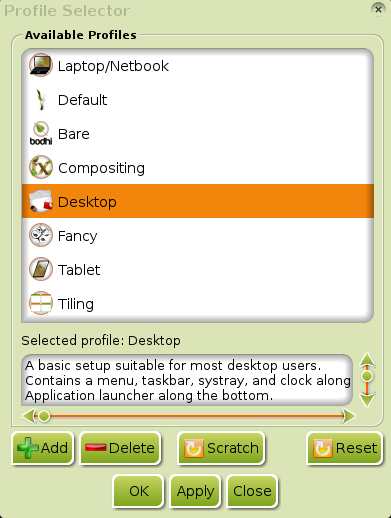
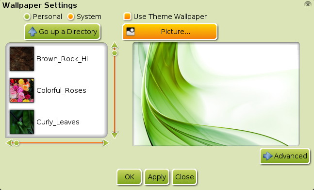

[click on any image to enlarge]
Enlightenment (E17) gives the user a great amount of control when it comes to configuring their computing environment. It is quite common for E17 users to spend hours tweaking different settings to get it just right. Some of these users have been kind enough to share their hard work using Themes.Themes provide a way to package together all the different options that alter the look of your desktop. In a nutshell, they answer the question of how to display different aspects of your desktop. This can include everything from the background to the Clock Gadget and more.
- Switching Themes
- Adding Themes
- Advanced Themes
- Changing Just the Background
- Other Theme Considerations
Switching Themes
To bring up the Theme Selector dialog go to Main Menu>Settings>Theme. (If you do not see this option, you may need to load the Theme Module)
This is the Basic view of the Theme Selector:

The list on the left shows all the available Themes. Clicking on one will show a preview of the Theme on the right. When you find a Theme you like, select it from the list and click OK or Apply. The changes will take place immediately. In the unusual circumstance that they don't, try restarting E17 (Main Menu>Enlightenment>Restart or CTRL+ALT+END).
You may be wondering what the options Personal and
System in the top left of the dialog mean. This simply indicates
in what directory the Theme Selector is looking for Themes. The
System option tells it to look in
/usr/share/enlightenment/data/themes/. The Personal
option points to ~/.e/e/themes/. If you are the creative type
and want to create your own Theme, you can save it here. (See
Creating Themes)
Also, we encourage you to consider sharing it with the rest
of the Bodhi Linux community.
Adding Themes
By default, Bodhi only comes with a handful of Themes. You can download more from Bodhi's Art Wiki (external link). Follow the link to Enlightenment Themes, and you can install the entire Bodhi Theme Pack featuring many beautiful themes created by our community members.
Once installed, your new Themes should show under the System Theme options.
You might want to also check out the Enlightenment Exchange (external link) for other themes created by the greater E17 community.
Advanced Themes
By now, you probably have tried out several different Themes. It's likely that you have had likes and dislikes about several of them, and you wish you could use the Menu from one Theme along with the Clock style of another. As mentioned before, the user is in control of their desktop, and the Theme Selector makes it very easy to mix and match different elements from different Themes.
Open the Theme Selector and click on the Advanced button in the bottom right corner. The dialog will expand into three sections:

The first section on the left, Theme Categories, shows all the different options that can be controlled by Themes. The middle section, Themes, shows all the available Themes on your computer. The right most section, Preview, is a preview window like there was in the Basic view.
In Theme Categories, all the options with a check next to them have an assigned Theme. In the Themes section, all Themes with the paintbrush and colors icon are Themes that have been assigned to at least one category.
Assign Themes
To assign a theme to a category, select the category in the Theme Categories section. Then select the desired Theme from the Themes section, and click the Assign button near the bottom left corner.
For example, say you like most of the Sky-Bodhi Theme, except you would prefer to use the Start button from Grayish-Bodhi. Open the Advanced Theme Selector dialog, select the modules/start category under Theme Categories, select the AL-Grayish-Bodhi theme under Themes, and click Assign. You will notice that an icon displays next to the newly assigned category. This indicates the category's Theme has been changed. Changes will not take effect until you click OK or Apply at the bottom of the dialog. You can make assignments to as many categories as you want, and when you are ready, Apply all the changes at once. Using our example, if you go back and look at the modules/start category you should see a check next to it indicating that this category is assigned a Theme. Selecting the category will show you what Theme is assigned by automatically selecting it in the Themes section.
Remove Themes
If you want to remove an assigned Theme from a category, select the category and click Clear. Alternatively, you can remove all Themes by clicking Clear All. Then click OK or Apply to remove the assignment.
Base Theme
One special category of note is the Base Theme category. The Basic view of the Theme Selector is actually a streamlined interface for assigning this category. If a Theme is assigned to Base Theme, it will apply any customizations to any category that is defined in the Theme.
No check marks will show next to affected categories to indicate they are customized, as the result of assigning the Base Theme. This is because assigning a Theme to any of the other categories will override any customizations from the Base Theme.
Any category without a Theme assigned (either directly assigned or from the Base Theme) will use the default theme.
Saving Themes
Now perhaps, you have spent several hours creating a custom Theme by mixing up themes from the Advanced Theme Selector. You want to try a new look, but not lose your current Theme. At this point, you are probably looking for the Save button, but you won't find it because it does not exist. To get around this, we can use Profiles. (Further information in the Profiles section.)
During your first boot of Bodhi, you selected a Profile (Bare, Desktop, Fancy, etc.). All the changes you have made to your current theme are now a part of that Profile you chose.
To open the Profile dialog, go to Main Menu>Settings>All>Settings>Profiles. This will open the Profile Selector:
{kind=link}
The Profile you chose on your initial boot will be selected. Click the Add button at the bottom, and enter a name into the Add New Profile dialog that pops up. Click OK, and your new Profile will be added to the list of available profiles. It is, essentially, a duplicate of your current Profile, allowing you to try other Profiles and still be able to return to it.
Creating Themes
The above method of using Profiles is a quick hack and is not the most elegant way to save a Theme. The ideal method should be to create an actual Theme. This topic is beyond the scope of this section. Check out Creating Themes section for instructions on how to do this.
Change Just the Background
If you're interested in changing just the background (wallpaper), here's how. Go to Main Menu>Settings>Wallpaper. Uncheck the Use Theme Wallpaper option, and select the background you want. You may need to convert the picture if you do not see it initially. Use the Picture dialog to do this.
{kind=link}
Other Theme Considerations
This article has discussed how to customize your E17 Theme and various elements within it. However, many applications in use on Linux systems are built using GTK/QT and therefore will not be affected by changes to the E17 Theme. For information on how to control the look of GTK/QT applications please see the section Other Settings.